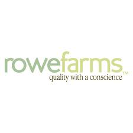

Alice Bennett
Rowe Farms - Dishwasher
one of the first ever jobs I had was working for a small grocery store called rowe farms. I loved it, it was hard work though. They had me working every day after school, I'd run home from my biology class straight to the back of the store to start on the work I had to get done by the end of the shift. I worked in the back of the store. that meant that I was in charge of cleaning all the dishes, dealing with all the waste, cleaning up for closing, and serving meat from behind the meat counter. It was a great first job, I loved everyone that I worked with.
Hoopers - Cashier
the next job I got was with a pharmacy called "Hoopers" it wasn't as physically intesive as rowe farms was, I wasn't hauling an oven to the back every shift to clean it, but working at Hoopers was a lot more customer service focused. I worked at the front operating the cash register, managing and ordering inventory, and keeping the store clean. I also had to help out the pharmacists at the back. This mostly entailed filing prescriptions, answering basic questions about prescriptions, and answering calls. I also loved this job, and not having as much physical work after school was very appreciated. The owner Joe was amazing, so kind, it was really nice to have the owner be so easy to talk to and understanding. My coworkers were also great, though mostly a lot older than I was, I always enjoyed the stories they would tell me when it wasn't too busy.